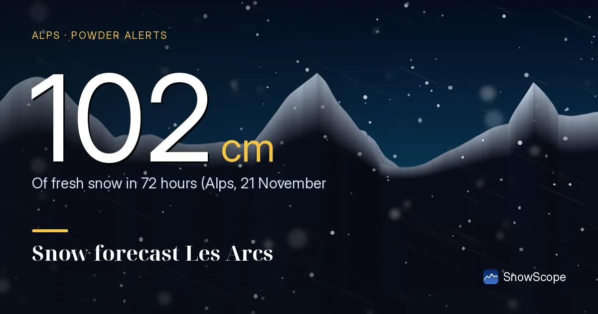

Snow forecast Les Arcs: 102 cm of fresh snow in 72 hours (Alps, 21 November)
Les Arcs picked up 102 cm of fresh snow over three days, bringing upper slopes to 80 cm. The best snow is concentrated high: at 3,205 m you have good depth, but lower down the cover thins fast—a probe check before you ski matters now.
See the live snow forecast for Les Arcs in the SnowScope appSnow depth, powder alerts and the 3D map, free.
Three days of steady snow across the range
A band of heavy snow moved through the Alps from Wednesday to Friday. Les Arcs, Courmayeur and Les Grands Montets all recorded between 100 and 114 cm in 72 hours. The snow fell in waves: Les Arcs saw 41 cm on 19 November, 50 cm on 20 November, and 11 cm yesterday.
The storm left 87,520 km² of snowy ground across the Alps today. Snow now reaches 971 of the 1,204 resorts in the range—a jump from 929 resorts two days earlier.
| Resort | Snow depth | New snow, 72 h | Coming, next days | Top |
|---|---|---|---|---|
| Les Grands Montets | 74 cm | 114 cm | 80 cm | 2,768 m |
| Courmayeur | 67 cm | 105 cm | 76 cm | 2,749 m |
| Orelle | 136 cm | 105 cm | 88 cm | 3,221 m |
| Les Arcs | 80 cm | 102 cm | 74 cm | 3,205 m |
| La Rosière | 77 cm | 100 cm | 71 cm | 2,799 m |

How this compares with past Novembers
Les Arcs sits in a good position for November. The upper slopes at 3,205 m hold 80 cm—a solid base for mid-season. At middle elevation (around 2,779 m), SnowScope shows 61 cm, which is thinner than the usual 64 cm for this date but counts as above average compared to past winters.
Early November snow is worth having. Most years, this much depth does not arrive until early December on the mid and lower runs.
Height makes the difference today
Upper slopes at Les Arcs carry 80 cm. Drop to base level (1,222 m) and you find just 10–15 cm. This steep gradient is typical after a storm: high peaks catch the most snow, while lower slopes still wait for more.
Sunday 22 November brings 53 cm more, with most falling above 2,500 m. By Monday 23 November, the system eases and adds only 20 cm. The trend then shifts: 24 November shows little new snow (around 1 cm) as the low-pressure system moves away.
Rain line and when to plan your day
The freezing level at Les Arcs today sits between 2,360 and 2,600 m, so snow falls on all slopes. By Sunday it climbs to 2,500–2,780 m—still below the top (3,205 m)—keeping upper slopes dry. On Monday the freezing level drops to 2,100–2,780 m; expect mixed conditions on mid-mountain runs.
On 24 November, the freezing level swings higher again to 2,130–2,350 m. Plan your off-piste days for Sunday and Monday when the freeze line is lower and snow is likely to be drier and more stable.
What ground stations tell us
Real-time measurements support the picture. The Hohe Munde Gipfel station (2,580 m) recorded 62 cm on 20 November with 40 cm added in 24 hours. The Daone station at lower elevation (1,785 m) held 45 cm, also with 40 cm new snow that day. These single-point readings confirm that heavy falls reached both high and middle elevations.
Ground-truth measurements anchor what the snow map shows. Because each station is a specific location on a specific date, compare them with your chosen slope and aspect when you plan your run.
Avalanche hazard and next steps
Avalanche danger in the region sits at level 3 on the 5-level scale. Fresh snow on steep slopes and wind-loaded gullies require care. Check the Météo-France BERA bulletin before you venture off-piste or into the backcountry.
More powder is forecast through the weekend. The SnowScope app alerts you when new snow reaches your chosen resorts, so you can time your trip to ride it fresh.
Tips for skiers
- Ski above 2,500 m this weekend for the best snow quality and lowest rain risk; lower slopes are thinner and may turn to slush by afternoon.
- Sunday 22 November is the heaviest snow day ahead with 53 cm coming to Les Arcs. Plan your off-piste for then if conditions allow.
- Wind has worked the new snow into drifts on lee slopes and ridges. Use a probe or shovel to feel what lies under the surface before committing to steep terrain.
- Read the official Météo-France BERA avalanche bulletin before skiing off-piste or touring; fresh snow on a mid-season slope needs respect.
- Check Les Arcs' website for lift status and opening dates before you travel—snow on the map does not confirm the resort is operating.
About these numbers
Resort snow depths are the deepest snow on the resort's upper slopes on the date shown; they are estimates for an area, not a measurement at one point. Forecasts can change. Always read the official avalanche bulletin before going off-piste.
Official avalanche bulletins: Météo-France BERA · AINEVA
Cite this report
For research, teaching or the press: the numbers and charts are free to reuse under CC BY 4.0 with this citation.
SnowScope (2026), Snow forecast Les Arcs: 102 cm of fresh snow in 72 hours (Alps, 21 November), https://snowscope.app/blog/en/2026/11/alps-les-arcs-fresh-snow-powder-alert-21-november-2026.html, accessed 2026-11-21
SnowScope (Atlas Labs). (2026, November 21). Snow forecast Les Arcs: 102 cm of fresh snow in 72 hours (Alps, 21 November). SnowScope snow reports. https://snowscope.app/blog/en/2026/11/alps-les-arcs-fresh-snow-powder-alert-21-november-2026.html
BibTeX
@misc{snowscope2026alpslesarcsfreshsnowpowd,
author = {{SnowScope (Atlas Labs)}},
title = {Snow forecast Les Arcs: 102 cm of fresh snow in 72 hours (Alps, 21 November)},
year = {2026},
month = nov,
howpublished = {\url{https://snowscope.app/blog/en/2026/11/alps-les-arcs-fresh-snow-powder-alert-21-november-2026.html}},
note = {Published 2026-11-21 11:02 UTC; accessed 2026-11-21}
}· CC BY 4.0 · Methods, data and tools →
Les Arcs: snow and temperature by height, this winter vs last (tools) →
Follow Les Arcs
Free: a message when fresh snow is coming, and the forecast every morning.
More snow reports

Chamonix's next week brings 27 cm at the top (8–46 cm range), peaking on Wednesday 25 November. Forecast for 23–29 November 2026.

Alps snow report 18 November: Orelle leads with 111 cm upper-slope snow. Weekend forecast brings 100+ cm new snow at top resorts.

Les Arcs forecast for 23–29 November: 29 cm at the top, 26 cm mid-mountain, 12 cm at the base. Data from 16 November.